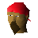

Cabin Boy Jenkins

| Config name | cabin_boy_jenkins |
| NPC id | 754 |
| Combat level | hidden |
| Options | Talk-to |
| Wander range | 5 tiles from spawn |
| Defined in | scripts/quests/quest_dragon/configs/quest_dragon.npc |
Cabin Boy Jenkins
His job is to keep the ship in tip-top condition!
Show all 1 spawn on the world map → Open in knowledge graph →
Locations
| Area | Coordinates | Level | Count | Map |
|---|---|---|---|---|
| Port Sarim | 3046, 3207 | 1 | 1 | view |
Dialogue
Cabin Boy JenkinsAhoy! What d'ye think of yer ship then?
PlayerI'm ready to go back to shore.
You disembark from the ship.
PlayerI'd like to inspect her some more.
Cabin Boy JenkinsAye.
PlayerCan you sail this ship to Crandor?
Cabin Boy JenkinsNot me, sir! I'm just an 'umble cabin boy. You'll need a proper cap'n.
PlayerWhere can I find a captain?
Cabin Boy JenkinsThe cap'ns round 'ere seem to be a mite scared of Crandor. I ask 'em why and they just say it was afore my time,
Cabin Boy Jenkinsbut there is one cap'n I reckon might 'elp. I 'eard there's a retired 'un who lives in Draynor Village who's so desperate to sail again 'e'd take any job.
Cabin Boy JenkinsI can't remember 'is name, but 'e lives in Draynor Village an' makes rope.
Referenced in scripts
scripts/areas/area_port_sarim/scripts/cabin_boy_jenkins.rs2